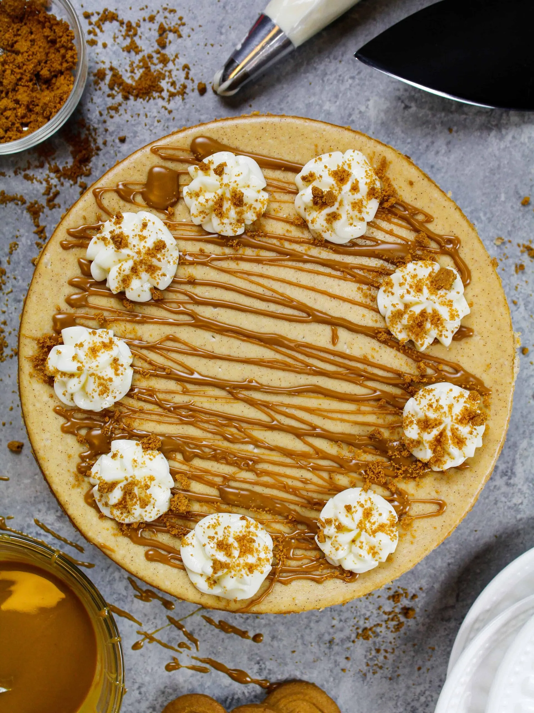
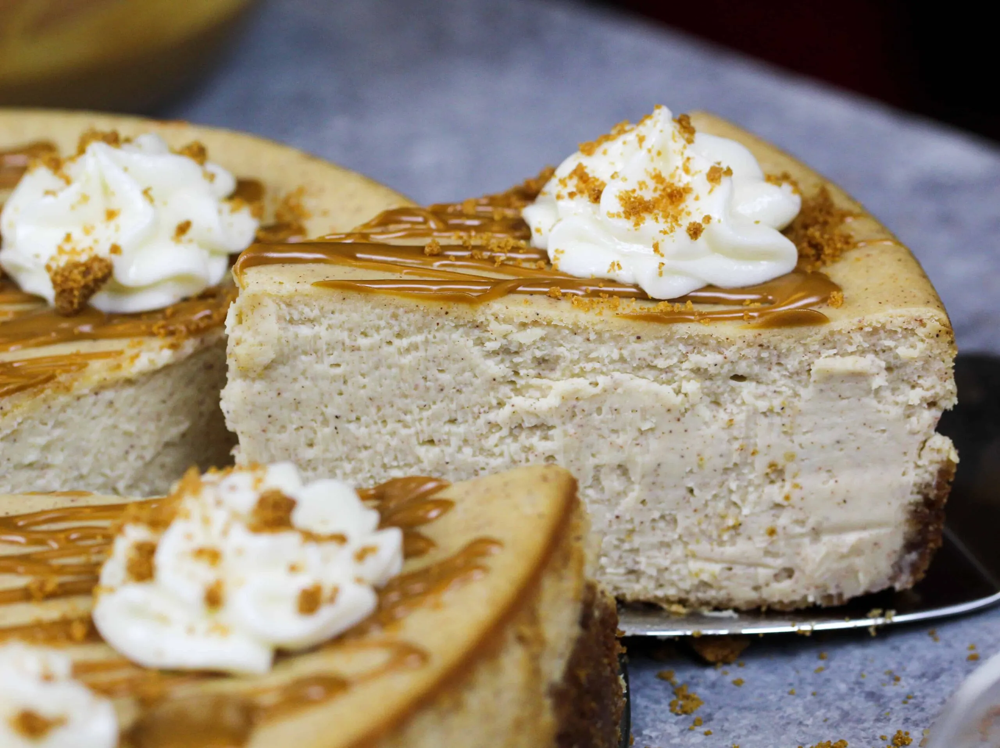

Biscoff Cookie Cheesecake Recipe
My Evaluation Document
Description
Indulge in the irresistible flavors of this Biscoff Cookie Cheesecake, showcasing a rich and
creamy filling nestled in a decadent Biscoff cookie crust. Topped with warm cookie butter and whipped cream,
this dessert is a perfect blend of sweet and spiced, making it a delightful treat for any occasion. Whether
you're serving it at a celebration or enjoying it on a cozy night in, this cheesecake is sure to impress
with its luscious texture and inviting aroma.
Images



Source: ChelSweets
Ingredients
Biscoff Cookie Crust
- 1 3/4 cups biscoff cookie crumbs (190g)
- 5 Tbsp granulated sugar (63g)
- 6 Tbsp salted butter, melted (85g)
Biscoff Cheesecake
- 5 cups or 5-8 oz. packages full-fat cream cheese, room temperature (1130g)
- 1 1/2 cups granulated sugar (300g)
- 1/2 cup full-fat sour cream, room temperature (128g)
- 1/4 cup cookie butter (60g)
- 1 Tbsp vanilla extract or vanilla bean paste (12g)
- 1 Tbsp ground cinnamon (7g)
- 4 large eggs, room temperature (224g)
Garnish
- 1/2 cup cookie butter, warmed (120g)
- Whipped cream
Nutrition Facts
- Nutrition Facts:
- Serving Size: 1
- Yield: 12
Amount Per Serving:
- Calories: 534
- Total Fat: 30g
- Saturated Fat: 12g
- Trans Fat: 0g
- Unsaturated Fat: 16g
- Cholesterol: 113mg
- Sodium: 276mg
- Carbohydrates: 62g
- Fiber: 1g
- Sugar: 43g
- Protein: 6g
Instructions
- Preheat oven to 350 F / 175 C.
- Add 1 1 3/4 cups of Biscoff cookie crumbs, 5 Tbsp granulated sugar and 6 Tbsp melted butter into a medium bowl.
Mix together until the ingredients are combined and the cookie crumbs look moist.
- Pour the cookie mixture into a 9-inch springform pan. Use the back of a spoon or the bottom of a measuring cup to
press down firmly and create a compact, even crust covering the bottom of the pan and reaching about halfway up the sides of the pan.
- Bake for 8 minutes then remove from the oven. Place the pan on a wire rack to cool.
- Keep your oven on but reduce the temperature to 325 F / 165 C.
While the cookie crust bakes and cools make the cheesecake filling.
- Place 5 cups of room temperature cream cheese in a large bowl. Beat with a hand mixer or stand mixer fitted with
a whisk attachment on a low speed until creamy and smooth.
- Add in 1 1/2 cups of sugar, 1/2 cup room temperature sour cream, 1/4 cup cookie butter, 1 Tbsp vanilla extract
and 1 Tbsp ground cinnamon. Mix on a medium-low speed until combined, scraping the sides of the bowl with a rubber spatula as needed.
- Crack 4 large eggs into a separate bowl and mix together with a fork until scrambled. Slowly mix the eggs into the
cream cheese mixture on a medium-low speed. Mix just until the eggs are incorporated.
- Scrape the sides and bottom of the bowl with a rubber spatula then mix on a low speed as needed to ensure the
ingredients are fully combined and that the batter is smooth. Gently bang your mixing bowl on your counter a few
times to help release any trapped air bubbles, which can cause your cheesecake to crack.
- Pour the cheesecake filling on top of the cooled cookie crust and bake at 325 F / 165 C for 30 minutes.
- Reduce the oven temperature to 250 F / 120 C and bake for an additional 45 minutes.
- Once the cheesecake is fully baked, turn the oven off but leave your cheesecake in the oven to cool for another 30 minutes
WITHOUT OPENING THE DOOR. I know it's hard not to peek, but it's important that all that heat stays in the oven to let it to slowly cool.
This minimizes the temperature shock and prevents your cheesecake from cracking.
- After 30 minutes of cooling, crack your oven door open with a wooden spoon and let the cheesecake cool in the oven for another hour.
- Next, remove the cheesecake from the oven and let it continue to cool at room temperature for 2 hours. Once it's reach room temperature,
cover the top of the cheesecake with plastic wrap and refrigerate the cheesecake for an additional 3-4 hours or overnight.
- When you're ready to enjoy this Biscoff cheesecake, remove it from the fridge and carefully release the collar of the springform pan.
- Drizzle warm cookie butter over the top of cheesecake and top with whipped cream swirls. Use a sharp, warm knife to cut into the chilled cheesecake.
Clean the knife after each cut to get perfect slices.
Source: ChelSweets
Notes
Making This Biscoff Cheesecake in Advance:
This cheesecake can be stored in the fridge for up to a week. Store slices in an airtight container or cover the springform pan tightly with plastic wrap to keep it fresh. If you're making this cheesecake in advance, wait to garnish it with melted cookie butter and whipped cream until you plan to serve it
The Toothpick Test:
The first is the toothpick test. Once you turn off the oven, insert a toothpick into the cheesecake 1-inch from the edge of the pan. If it comes out clean, your cheesecake is done baking.
Recipe Websites
Epicurious - This website has a really sleek UI with very easy-to-read text which is essential for reading recipes.
The usual structure of a page is that the food is thoroughly described in a paragraph, then images of materials and utensils needed with online
links to buy them, ingredients, and instructions. There are also tags at the bottom to help search for similar foods.
HelloFresh - This website is very detailed and recipes are only a section of the
overall business, which delivers fresh foods and ingredients to paying customers to cook with. For each recipe's page, it immediately communicates,
prep time, ease, and allergens. Another great feature is it allowing users to change the serving amount of the particular meal which adjusts the ingredient amounts.
Images are also used for each step of the instructions although some of the text could be spaced or broken down better.
Christopher Kimball's Milk Street - This website has a really home-y feel and I really like the newspaper style look on each
recipe page. However, the styling/structure of the ingredients and directions sections isnt the best.
Non-recipe Websites
Airbnb - The simplicity and readability of how Airbnb communicates all details about a property is
something I want to incorporate on my page. The use of icons is also really cool and I can take inspiration from that as well.
The Outline - I really like the interactive design of their home page as well as how images react on articles' pages.
RingCentral - The rounded nature of the site's elements and the fonts have a very neat and organized
look I'd want to have in my website.